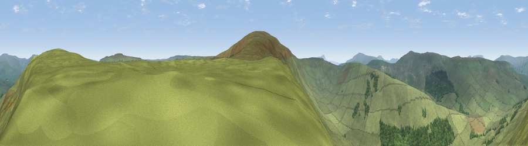

Viewpoint near Gayle
#9980 in England · top 24% of its area beats it · near Gayle · open accessWhere it is
The exact computed spot (SD 84075 86225). Click the marker for map links.
Public access: this spot lies on mapped open-access land (CRoW Act 2000) — you may roam here on foot. Computed from Natural England's CRoW access layer and OpenStreetMap rights of way — not the legal definitive map. Always verify locally.
The view, rendered

A 360° render of this exact spot computed from the terrain model, tree cover and land cover — summer colours, afternoon light, calibrated against photographs of famous viewpoints. Real trees, hedges and buildings will differ in detail.
The panorama
Grey silhouette: terrain skyline in each direction (720 bearings, Earth curvature and refraction included). Dashed green: skyline with trees (+15 m) and buildings (+8 m) as obstacles. Blue strip: how far the ground is visible on each bearing.
Where the view opens
Wedge length = distance to the farthest visible ground on that bearing (vegetation-aware). Rings at 10, 25 and 50 km.
What fills the view
87% grassland · 13% woodland
Angular shares of the visible panorama (visual magnitude), not map area. Landscape diversity 0.17 (0–1 Shannon).
Key numbers
More beautiful places nearby
The staircase of upgrades: each row has a higher view potential than everything closer. Driving times are estimates from straight-line distance, calibrated against real road routing — check an actual route before setting out.
| Place | Direction | Drive | Score |
|---|---|---|---|
| Viewpoint near Gayle | S · 1 km | ~4 min | 73.6 |
| Great Knoutberry Hill | W · 5 km | ~12 min | 74.2 |
| Viewpoint near Cotterdale | NNE · 10 km | ~19 min | 74.4 |
| Whernside | WSW · 11 km | ~21 min | 79.9 |
| Warton Crag | WSW · 37 km | ~56 min | 83.2 |
| Viewpoint near Finsthwaite | W · 45 km | ~65 min | 90.3 |
| The Knoll | S · 399 km | ~382 min | 91.0 |
54.27143, -2.24603 · source: screening · position refined by local search. Computed location — check access rights before visiting.